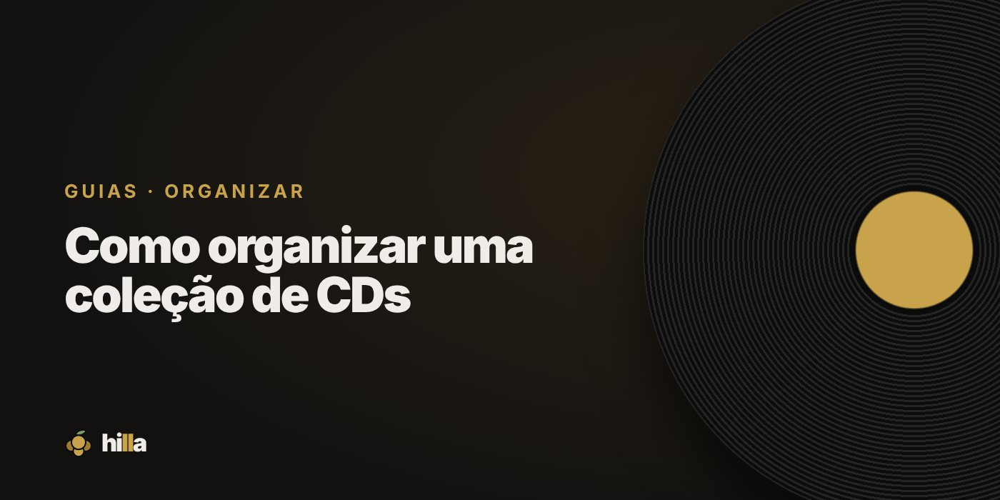

Como organizar uma coleção de CDs

O CD voltou a ser procurado por colecionadores: é barato, compacto e tem muita coisa que nunca saiu em vinil. Uma coleção de CDs cresce rápido, e organizar desde cedo evita bagunça.
Onde guardar
- Estantes próprias para CD, com a profundidade certa, deixam as lombadas alinhadas e fáceis de ler.
- Guarde em pé, com as lombadas para fora.
- Longe do sol, que desbota o encarte e pode deformar a caixa.
- Evite caixas fechadas em lugares úmidos, que favorecem fungos no encarte.
Em que ordem
As mesmas regras do vinil valem aqui. A mais prática é alfabética por artista e, dentro de cada artista, por ano de lançamento. Para coleções grandes, separar primeiro por gênero ajuda.
Coletâneas, trilhas sonoras e discos de vários artistas costumam ficar num bloco separado, no fim.
Caixas e encartes
- Troque caixas quebradas: são baratas e protegem o disco e o encarte.
- Guarde a contracapa original. Ela costuma ter informações que não estão em lugar nenhum.
- Edições especiais em digipak ou caixas de papelão precisam de mais cuidado com umidade e dobras.
Cuidados com o disco
- Pegue pelo furo do centro e pela borda.
- Limpe com pano macio, do centro para fora, em linha reta, nunca em círculos.
- Não deixe o CD fora da caixa: a maior parte dos riscos acontece em cima da mesa.
Catalogue a coleção
CD é fácil de comprar repetido: é pequeno, barato e muitos álbuns têm várias edições. Um catálogo resolve isso.
Na Hilla, quase todo CD tem código de barras: basta apontar a câmera do celular, e a capa, o ano e o gênero entram sozinhos. Os CDs ficam separados dos vinis na Prateleira, e a conquista Mestre do CD acompanha o crescimento da coleção.
Checklist
- Estante própria, discos em pé.
- Ordem alfabética, com um bloco para coletâneas.
- Caixas inteiras e encartes guardados.
- Catálogo atualizado a cada compra.
Organize sua coleção na Hilla
Grátis. Prateleira, wishlist com prioridades e diário de audições, no celular.